Roadmap
- Basic Probability Review
- The normal distribution & P-Values
- Hypothesis testing
Probability Distributions & What they can Do for You!
So far, we’ve been slinging around normal distribution terminology casually. Let’s formalize it, and make it useful for hypothesis testing!
Probability!
Probability - The fraction of observations of an event given multiple repeated independent observations.
Probability of Eating
Let’s say you’ve offered 50 budworms a leaf to eat. 45 eat.
\(P(eats) = \frac{45}{50} = 0.9\)
Now you offer 50 others a leaf. 10 eat.
\(P(eats) = \frac{10}{50} = 0.2\)
Probability of Exclusive Feeding Events
We offered our budworms two different leaves
20 eat the first, 5 eat the second.
What is the probability of eating one or the other?
P(A or B) = P(A) + P(B)
P(eats) = \(\frac{20}{50} + \frac{5}{50} = 0.5\)
Probability of Joint Events
We offer our budworms a leaf. 45 eat it. Then we offern all of them another leaf. 20 eat it. What is the probability of eating one and the other?
P(A and B) = P(A)P(B)
P(eats twice) = \(\frac{45}{50} * \frac{20}{45}\) = \(\frac{20}{50}\) = 0.4
JOINT PROBABILITY
Distributions!
(when a point probabilty just ain’t enough)
Frequency Distributions Make Intuitive Sense
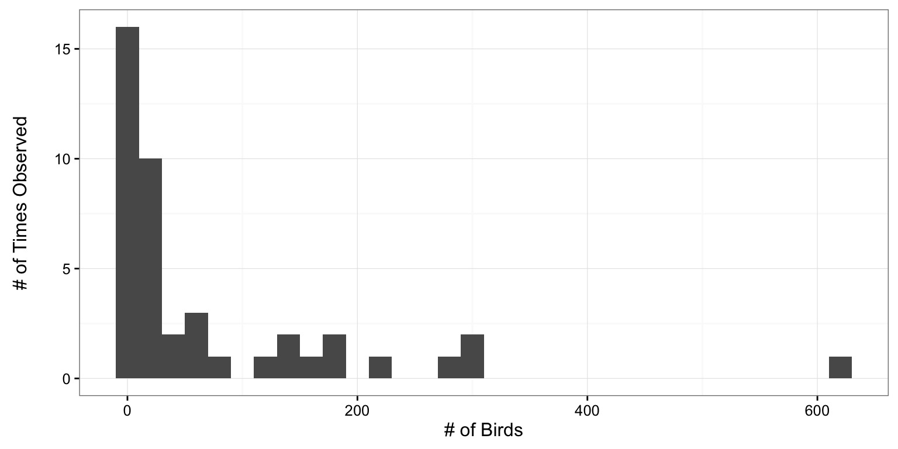
Frequencies Can be Turned Into Probabilities
Just divide by total # of observations
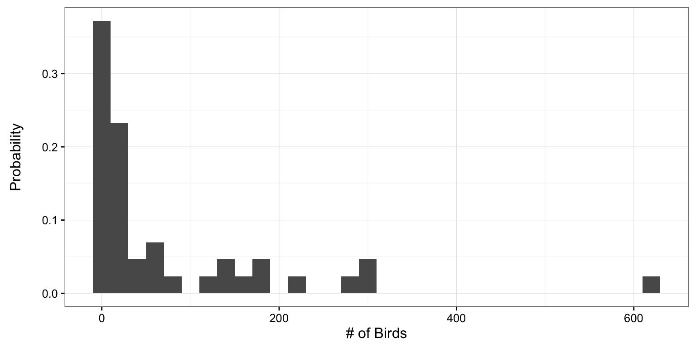
But - we have binned observations…
Probabilities of Individual Observations
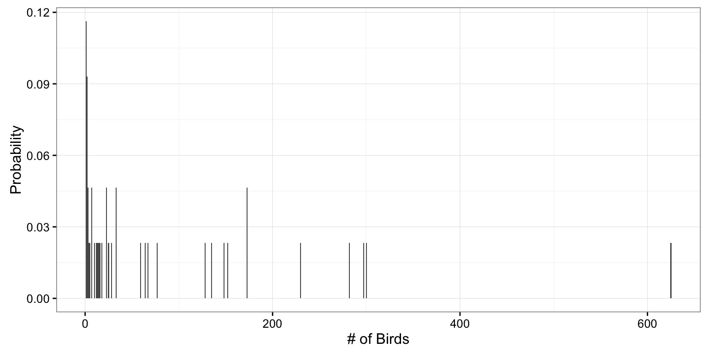
Tradeoff: Bins or we need to find something that fills gaps
Continuous Probability Distributions
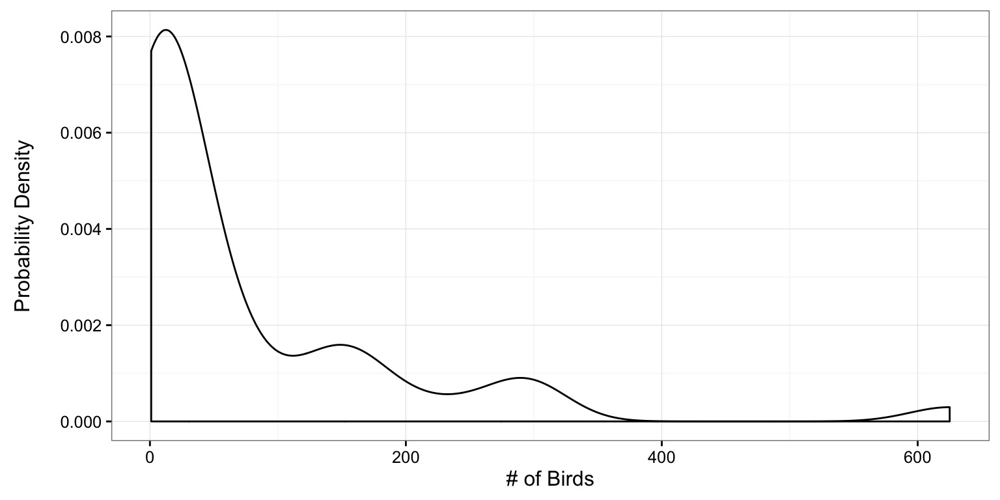
Any individual observation has a probability density.
Probability of a Range of Values
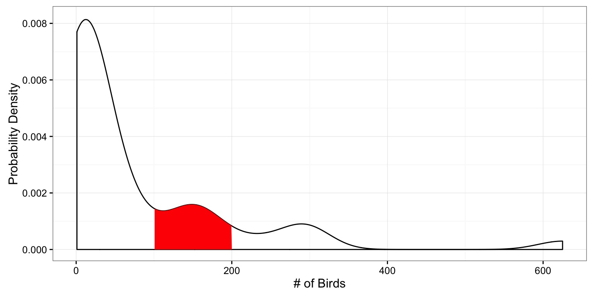
What is the probability of a value between 100 and 200?
Probability of a range of values
We obtain probabilities of observations between a range of values by integrating the distribution over selected values.
Probability as Integral Under the Curve
\(\int_{i=100}^{200}{P(a=i)}\)
Roadmap
- Basic Probability Review
- The normal distribution & P-Values
- Hypothesis testing
The Normal Distribution
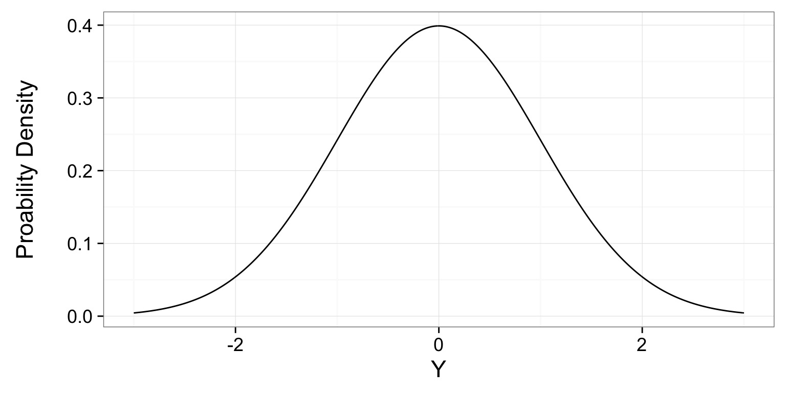
- A single mean data generating process
- Many sources of variation (error) with equal probability
- Low probability of ending up in tails, high in middle
67% of Values within 1 SD
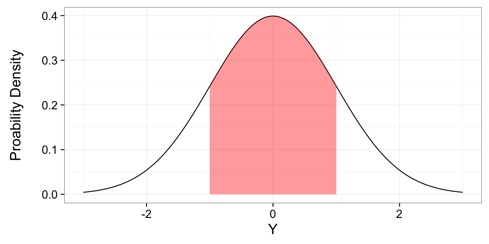
- If we summed up the probability densities under the curve, it would be 0.67
95% of Values within 2 (1.96) SD
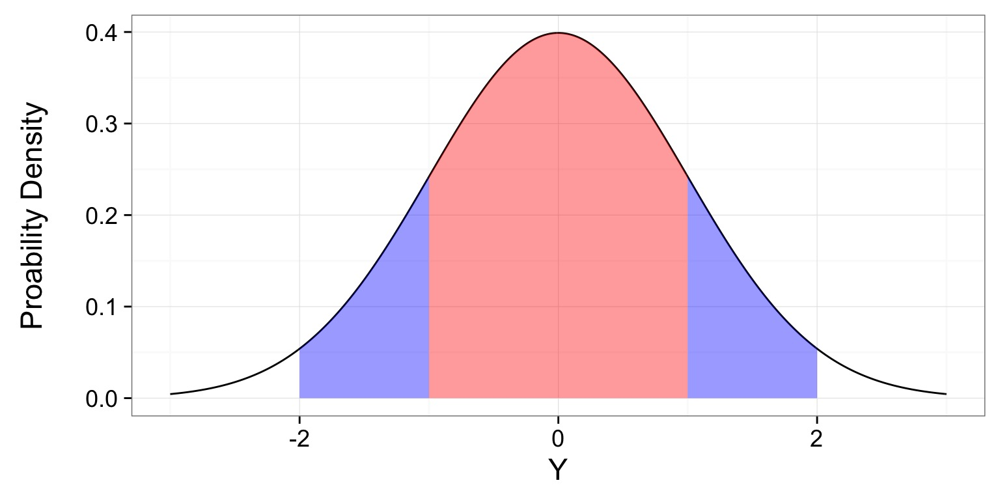
- If we summed up the probability densities under the curve, it would be 0.95
The Probability of a Value or More Extreme Value
The Probability of a Value or More Extreme Value
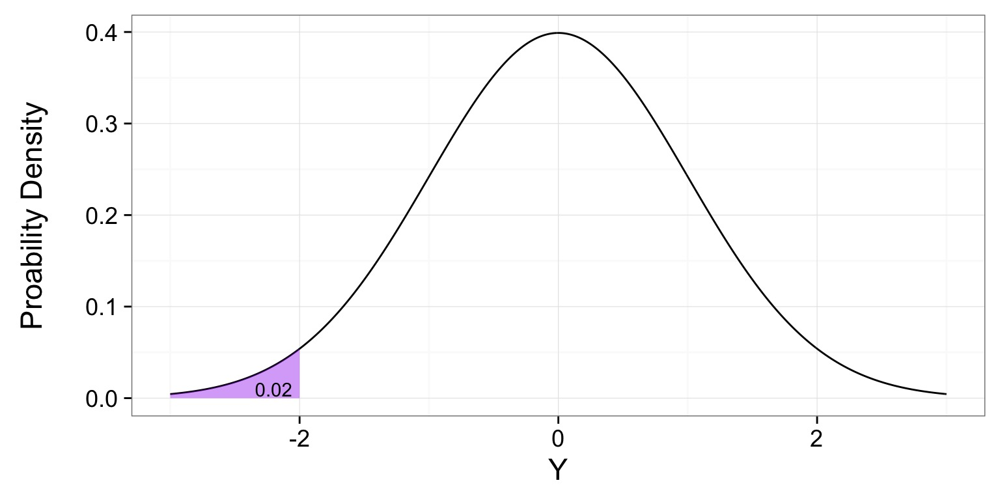
This is a p-value
P-Values
The probability of observing a value or more extreme value in a distribution.
The Probability of a Value or More Extreme Value
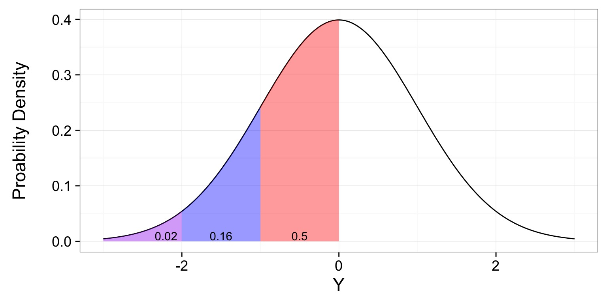
The Cummulative Distribution/Quantile Function
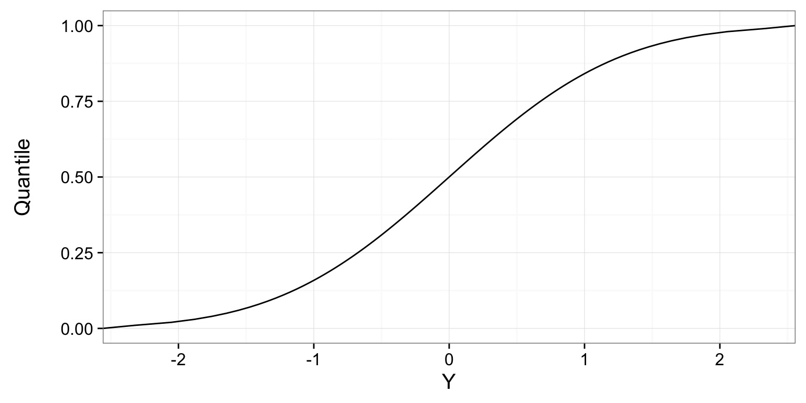
How p-value changes with different values of a distribution
Roadmap
- Basic Probability Review
- The normal distribution & P-Values
- Hypothesis testing
Inductive v. Deductive Reasoning
Deductive Inference: A larger theory is used to devise many small tests.
Inductive Inference: Small pieces of evidence are used to shape a larger theory and degree of belief.
Deriving Truth from Data
- Frequentist Inference: Correct conclusion drawn from repeated experiments
- Uses p-values and CIs as inferential engine
- Likelihoodist Inference: Evaluate the weight of evidence for different hypotheses
- Derivative of frequentist mode of thinking
- Uses model comparison (sometimes with p-values…)
- Bayesian Inference: Probability of belief that is constantly updated
- Uses explicit statements of probability and degree of belief for inferences
Primary Mode of Frequentist Inference
Null Hypothesis Tests: Falsify a null hypothesis : Evaluate weight of evidence
Null Hypothesis Tests & Popper
Falsification of hypotheses is key!
A theory should be considered scientific if, and only if, it is falsifiable.
Deductive Reasoning and Null Hypothesis Tests
A null hypothesis is a default condition that we can attempt to falsify.
Common Uses of Null Hypothesis Tests
Ho: Two groups are the same
Ho: An estimated parameter is not different from 0
Ho: The slopes of two lines are the same
Etc…
So, what conclusions can we draw if we reject the null?
Null Distributions
- Null hypotheses are associated with null statistical distributions.
- For example, if Ho states that a value is normally distributed, but not different from 0, the null distribtion is centered on 0 with some standard deviation.
- We then assess whether an observed value or more extreme value than our observation is likely.
R.A. Fisher and The P-Value For Null Hypotheses

P-value: The Probability of making an observation or more extreme observation given that the null hypothesis is true.
Evaluation of a Test Statistic
We use our data to calculate a test statistic that maps to a value of the null distribution.
We can then calculate the probability of observing our data, or of observing data even more extreme, given that the null hypothesis is true.
\(P(X \leq Data | H_{0})\)
Evaluation of a Test Statistic
Let’s say we know the distribution of chest hair lengths on Welsh Corgis 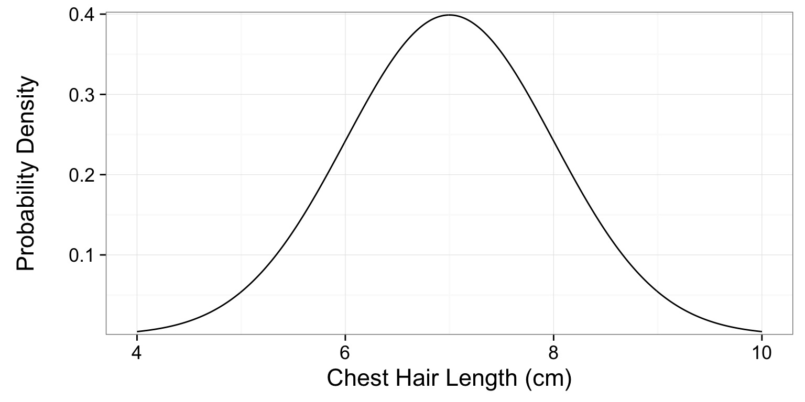
A short-haired Corgi
You have a Corgi with a chest hair that is 5 cm 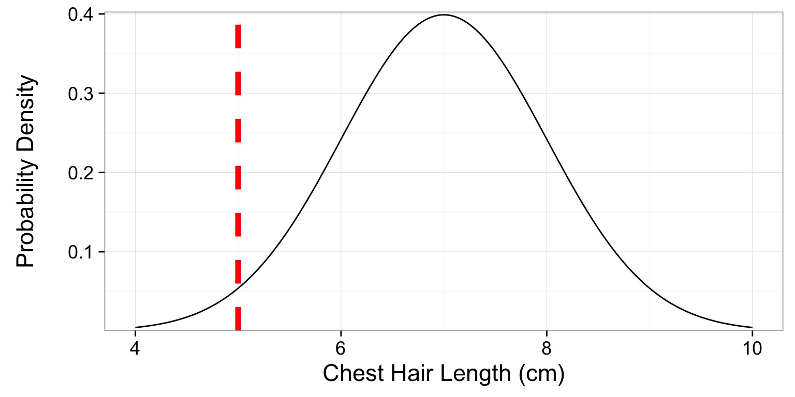
A Corgi’s P
What is the probability of this or a shorter-haired Corgi? 
p = 0.0228
Note - this is a one-tailed test!
1-Tailed v. 2-Tailed Tests
1-Tailed Test: We are explicit about whether Ha implies that our sample is greater than or less than our null value.
\(P(X \leq Data | H_{0})\) (1-tailed)
2-Tailed Test: We are make no assumption about the sign or direction of our alternative hypotheses.
\(P(X \leq Data | H_{0}) + P(X \geq Data | H_{0})\) (2-tailed)
Two-Tailed P Value
p = 2 x 0.0228 = 0.0456
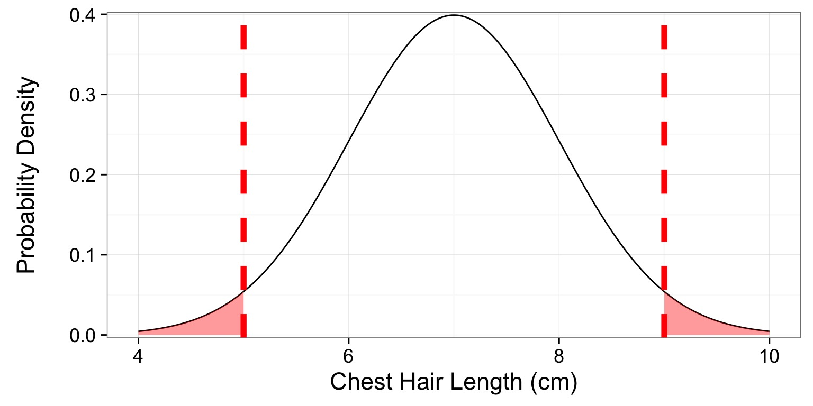
When should you use a 1-Tailed Test?
What does 0.0456 mean?
- There is a 4.56% chance of obtaining the observed data, or more extreme data, given that the null hypothesis is true.
- If you chose to reject the null, you have a ~ 1 in 22 chance of being wrong.
- How comfortable are you with rejecting the null?
Note: rejecting the null ̸= accepting a specific alternative